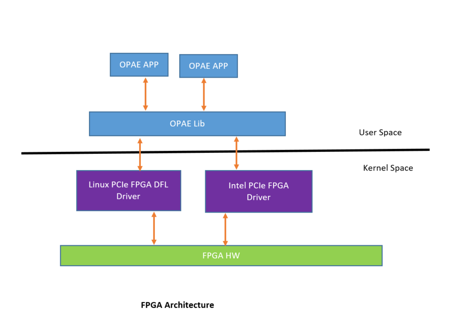

Enable OPAE on FPGA PCIe drivers¶
FPGA PCIe driver for PCIe-based Field-Programmable Gate Array (FPGA) solutions which implement the Device Feature List (DFL). This driver provides interfaces for user space applications to configure, enumerate, open and access FPGA accelerators on the FPGA DFL devices. additionally, it also enables system level management functions such as FPGA partial reconfiguration, power management, virtualization with DFL framework and DFL feature device drivers.
OPAE 1.4.0 release supports both FPGA Intel Linux driver as well as Linux FPGA DFL driver patch set2. Linux PCIe FPGA DFL driver supports Intel FPGA devices.
FPGA DFL Linux driver source code patchset2 available https://git.kernel.org/pub/scm/linux/kernel/git/stable/linux.git/tree/drivers?h=linux-5.4.y
FPGA DFL Linux driver source code patchset1 available https://git.kernel.org/pub/scm/linux/kernel/git/stable/linux.git/tree/drivers/fpga?h=v4.19.14
